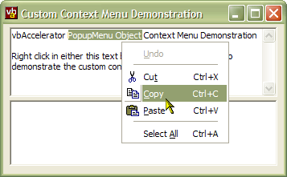

VB5 ContextMenu Demonstration (21K)
VB5 ContextMenu Demonstration (21K)
 VB6 Context Menu Demonstration (21K)
VB6 Context Menu Demonstration (21K)
 25 Nov 2002
25 Nov 2002
First Posted
 Subclassing Without The Crashes
Subclassing Without The Crashes

PopupMenu - Context Menu Demonstration
How to create dynamic context menus with icons for your application's controls
All Windows controls provide a facility to show context menus when the user right clicks on the control through the WM_CONTEXTMENU message. VB doesn't provide a way to interact with this message however, so if you want to replace the default context menu on a TextBox, or to provide a custom context menu for other controls, then you need some extra code. This article demonstrates how to provide fully customised context menu support with icon menus.
About WM_CONTEXTMENU
The WM_CONTEXTMENU message is sent by a control or window whenever the user performs the action associated with displaying a context menu. In order to pick up the message you simply subclass the appropriate window. You can determine where the user clicked by parsing the lParam parameter of the message, which contains the x position of the mouse in the low word and the y position in the high word. If you want the window or control to show the default context menu, then you just call the old window procedure with the same parameters as the message you received.
Using WM_CONTEXTMENU
To make things simpler, and in particular to allow you to show icon menus, I've written a wrapper class, cOwnerDrawContextMenu. This class uses the Subclassing and Timer Assistant DLL to subclass any number of controls or forms to pick up the message. In addition, it monitors the control or form to check if it has been destroyed, allowing it to automatically clear up the subclassing when your application exits. Once the class has been associated with a vbAccelerator PopupMenu object then you can set it up to automatically pick the menu to show from the IconMenu's internal list whenever it receives a message.
To use the cOwnerDrawContextMenu object, first create a WithEvents object for it within your form. You need to create a WithEvents object because it raises ContextMenu events to your code, allowing you to do initialisation on the menu you're about to display (for example, enabling or disabling particular menu items depending on the state of the control) or to tell Windows to show the default context menu for the control.
Once you've configured the object, you can start calling it's methods:
- Add(ByVal Key As String, ByVal hWnd As Long, ByVal sMenuKey As String)
Use this method to start intercepting WM_CONTEXTMENU messages for a control or form. The Key parameter can be set to anything you want to identify this control. hWnd is the Window Handle you want to intercept messages on, and sMenuKey (if set) selects which menu within the PopupMenu object should be shown. The Key parameter is provided to you whenever the control raises a ContextMenu event. - Remove(ByVal Key As String)
Removes a control or form which was previously added using the Add method - PopupMenu
Associates the PopupMenu object you want to use with the class. - hWnd(ByVal Key As String)
Gets or sets the window handle associated with a particular key.
About the Sample Project
The sample demonstrates displaying context menus for a text box (which normally displays a default Windows menu) and a list box (which doesn't). Firstly, a new cPopupMenu is created, and a top level menu with two submenus are added to it, one for the text box and another for the list box. Then an instance of the cOwnerDrawContextMenu object is created, associated with the PopupMenu object and the two sub menus are added.
When the ContextMenu event fires, the control checks the Key passed in to determine whether the menu is to be shown for a text box or a list box. In either case, the enabled state of the menu items is set depending on the state of the control. Note you could also add or remove items to the menu here. Finally, clicking in context menus are received through the PopupMenu's standard Click method.
The sample also contains a useful class, cTextBoxEdit which wraps up some of the standard Text Box edit menu operations, providing Undo, Redo, Cut, Copy and Paste functions, along with properties to determine whether these operations can be performed.